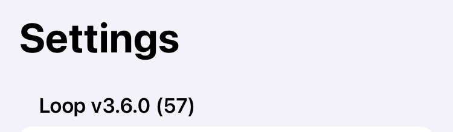

Releases
Loop Releases¶
The new features added with each Loop release are provided for reference.
For information about version 2 releases and compatibility between version 2 and 3, refer to Older Releases.
Current Release¶
The current released version for the Loop app is v3.8.1 and is built from the main branch of LoopWorkspace. The dates and contents for releases are summarized below in reverse chronological order (so newest release information comes first).
When main was updated to v3.8.1 for a hotfix, the same hotfix was applied to the
devbranch, which is at v3.9.1.See Updates in
devfor a summary of difference, if any, betweenmainanddev.
What Version Do I Have?¶
Tap on the Settings icon at the toolbar of the Loop app and look at the version information at upper left. (This graphic shows an older release.)

Is the Released Version Newer?¶
Release information is found on the GitHub LoopKit/LoopWorkspace release page.
Releases from Loop v3.4.4 and older are reported at GitHub LoopKit/Loop release page.
Loop 3 Version History¶
Loop v3.8.x¶
- It is a known issue that some screens show up as a different language for iOS 15 devices with v3.8.x.
- It is expected Loop will soon require a minimum of iOS 17
See Compatible Device:
Loop v3.8.1¶
Loop v3.8.1 was released on 23 September 2025.
This was released as a hotfix:
- the designed behavior of tapping on the bolus line should automatically replace the recommended value with zero
- this stopped working after changes were made to this interface to accommodate iOS 26
When putting together the hotfix, the following additional updates were included:
- Bring in updates from DanaKit
- Restore expected behavior for G6 of going to CGM Manager screen, instead of the Dexcom app, when tapping on glucose in the HUD
- Update Gemfile and Gemfile.lock to fix a security warning
- Add audio capability to Loop to support DanaKit optional behavior and possible OmniBLE InPlay/iPhone 16 work-around later
- Dana users no longer need to modify the code to use Background Sound if their CGM does not have a heartbeat
- Update some translations
When main was updated to v3.8.1 for a hotfix, the same hotfix was applied to the
devbranch, which is at v3.9.1.
Loop v3.8.0¶
Loop v3.8.0 was released on 14 September 2025.
When v3.8.0 was released, the
devbranch version was similarly updated to v3.9.0
v3.8.0 Highlights¶
- Add support for Dana-i and DanaRS-v3 pump models
- Update translations and convert to String Catalogs
- Update to support iOS 26
Limitations for iOS 15¶
Note that iOS 15 devices do not support:
- Loop Widgets, however, Loop Widgets continue to work with iOS 16 devices and iOS 18 and newer devices now support tinted widgets.
- The Mixpanel Service is not available
Loop v3.6.x¶
Loop v3.6.4¶
Loop v3.6.4 was released on 31 July 2025.
This release:
- provides support for newer European Libre 2 plus sensors (mid 2025 Libre 2 plus EU sensors)
- adds localization to the LibreTransmitter module
- adjusts build dependencies for G7SensorKit (no functional change)
- shifts the automatic build time from hh:00 to hh:33
- automatic builds have been running into errors recently
- this time shift avoids a time when GitHub resources are impacted
The updates applied to
mainfor v3.6.4 were also applied todevin v3.7.4.
Loop v3.6.3¶
Loop v3.6.3 was released on 10 July 2025.
This release fixes Loop Issue 2322: Negative interrupted bolus.
- The bug was that the amount reported after an interrupted bolus could be incorrect
- This bug was reported when a user heard a pod fault and tried to manually interrupt the bolus
- This release ensures the amount not delivered is only subtracted once for all cases
The updates applied to
mainfor v3.6.3 were also applied todevin v3.7.3.
Loop v3.6.2¶
Loop v3.6.2 was released on 25 June 2025.
There are no changes to the Loop app - this is a Browser Build fix only.
This release is the second fix for Browser Build features that stopped working when Apple made changes to their infrastructure beginning in May 2025. Those with valid Identifiers and build credentials probably did not notice that there was a problem.
Fixed
- The ability to run the
Add Identifiersaction is fixed with this version
Not Fixed
This only affects new builders and the instructions are updated to accomodate this restriction.
- We can no longer automatically enable the capability for Time Sensitive Notifications for Loop. This capability must be added manually as directed in this section: Add Time Sensitive Notifications
The updates applied to
mainfor v3.6.2 were also applied todevin v3.7.2.
Loop v3.6.1¶
Loop v3.6.1 was released on 13 June 2025.
There are no changes to the Loop app - this is a Browser Build fix only.
This release partially restored some Browser Build features that stopped working when Apple made changes to their infrastructure beginning in May 2025. Those with valid Identifiers and build credentials probably did not notice that there was a problem.
Fixed
- The ability to generate new build credentials after certificates expired or were deleted is fixed with this version
Not Fixed
- The ability to run the
Add Identifiersaction is still "broken" with this version - Identifiers can be added manually
The updates applied to
mainfor v3.6.1 were also applied todevin v3.7.1.
Loop v3.6.0¶
Loop v3.6.0 was released on 23 April 2025.
When v3.6.0 was released, the
devbranch version was similarly updated to v3.7.0
v3.6.0 Highlights¶
- Add Automatic Certificate Generation and Renewal
- Implement updates to minimize Dexcom G7 outages that were reported over the last few months, possibly related to iOS 18 changes
- Modify the bolus after meals button to say
Save Carbs & Deliver - Update Omnipod Eros and DASH repositories: some bug fixes, some improved responses
- Fix a few bugs
- Fixed: Stale value of the total bolus in the Bolus Progress Display in HUD - UI Bug only
- Fixed: Glucose change graph 'predicted' effects are inconsistent at different times or between orientations
- Fixed: Dexcom G7 calibration flags were not decoded correctly
- Fixed: Dexcom G7 rare but significant date offset for glucose data
- If the backfillFinished message was not detected and a stale backFill message was applied to a new sensor, the date for that glucose reading would be in error
- Fixed: The Algorithm Experiments screen could show stale selections - UI Bug only
- Not Fixed: The Basal Rate section of the Therapy Settings screen does not update until you exit the screen and then return (this will be addressed in a future update) - UI Bug only, and only seen on some phone hardware (like SE phones) with iOS 18
v3.6.0 Details¶
Add Automatic Certificate Generation and Renewal¶
Automatic certificate generation and renewal requires a Variable be added to your organization or your repository. Please see these instructions: Add Variable
Maintenance Updates¶
These maintenance changes do not affect the functioning of the Loop app but do enable continued build with current iOS, Xcode and macOS versions, as well as continued operation of the GitHub Actions (Browser Build) capability.
- LoopWorkspace PR 234: Modify GitHub action files to enable automatic renewal of certificates when they expire or are revoked
- LoopWorkspace PR 241, Loop PR 2303: Modify the way the Loop app is versioned - it is now updated in the LoopWorkspace repository instead of the Loop repository - this simplifies version releases
- This feature enables the development, or
devbranch, to have an updated version number with each modification - This enables any hotfix applied to
mainto be similarly applied to thedevbranch
- This feature enables the development, or
- LoopWorkspace PR 243: Update GitHub action files to use fastlane 2.227.1 and Xcode 16.3
- LoopWorkspace PR 248: Enable GitHub build to continue working after the keepalive-workflow repository was disabled by GitHub
Feature Updates¶
These are changes in response to feature requests (Loop Issues) that were implemented in the noted submodule. The LoopWorkspace respository was subsequently updated to include the feature.
| Loop Issue | Submodule Updated | PR in Submodule | Request | Modification |
|---|---|---|---|---|
| 2168 | Loop | 2300 | Request for message change helpful for little loopers with multiple caregivers; avoid double carbohydrate entry | Change button label to Save Carbs & Deliver |
Bug Fixes¶
These are fixes in response to specific bug reports (Loop Issues) that were implemented in the noted submodule. The LoopWorkspace respository was subsequently updated to include the bug fix.
| Loop Issue | Submodule Updated | PR in Submodule | Description of bug that is fixed |
|---|---|---|---|
| 2159 | Loop | 2163 | Glucose change graph 'predicted' effects are inconsistent at different times or between orientations |
| 2196 | Loop | 2295 | Bolus progress can display a stale total delivery value (UI bug only) |
| 2265 | G7SensorKit | 34 | No G7 CGM Updates - Loop Failure |
| 2291 | G7SensorKit | 35 | Backfill from G7 Created Bad Data |
| N/A | Loop | 2297 | Fix display glitch for Algorithm Experiment selections |
OmniBLE and OmniKit Updates¶
Updates were made to the Omnipod pump submodules: OmniBLE and OmniKit. Unless otherwise noted, the following functional updates were made to both submodules with the PR numbers included in parentheses:
- Miscellaneous Omnipod code improvements & cleanup (PR 135, 44)
- Unacknowledged command handling fixes and PodCommsSession improvements (PR 136, 45)
- DASH (OmniBLE only): Don't fail on ack comms error if validated response has been received (PR 137)
- Eros (OmniKit only): return clock icon when isClockOffset is true (PR 46)
- DASH (OmniBLE only): Use alternate type 7 getStatus call for standalone getStatus sessions (matches the Insulet PDM) (PR 138)
- Improved unacknowledged command recovery (PR 139, 47)
- Logic fix for 049 pod fault with concurrent temp basal commands; fixed Trio Issue (PR 140, 48)
- Logic fix for pump manager returns bogus podSuspended; fixed Trio Issue (PR 141, 49)
Loop v3.4.x¶
Loop v3.4.4¶
Loop v3.4.4 restored the TestFlight expiration date for Browser Build - it was released twice with the same build number. Just make sure your build (for both Browser Build and Mac Build) are later than 12 October 2024.
- The first release on 9 October 2024 inadvertently removed all the improvements from v3.4.3, but did fix the TestFlight expiration date
-
The second release on 12 October 2024 restored the improvements from v3.4.3
Loop v3.4.3¶
Loop v3.4.3 was released on 6 October 2024.
A few days later, it was discovered that the TestFlight expiration date was no longer available for Browser Build (due to a change in v3.4.2). This was quickly remedied with the Loop v3.4.4 release.
This was a minor update to the Loop code with a few bug fixes and some capability extensions.
Please use the main branch
Some people have become complacent about using the dev branch to get the latest updates. This is a good time to switch to the main branch.
New revision will be landing in the dev branch soon. Don't be surprised - stick with main until the changes have been tested.
These updates were incorporated in this release. The pull request for each modification is linked in parentheses.
-
CGMBLEKit: Add ONE to the display name (194)
-
G7SensorKit: Add ONE+ to the display name (28)
-
LibreTransmitter:
-
LoopKit:
-
Several fixes for OmniBLE (DASH), OmniKit (Eros)
The Browser Build method was updated to use Fastlane version 2.223.1. This change (208) fixes a build error reported by several folks across the Open Source app community. This was also added to LoopWorkspace dev branch (207).
Loop v3.4.2¶
Loop v3.4.2 was released on 5 October 2024.
This was a patch that fixed errors with the expiration date for the Mac-Xcode build method for Xcode 16. No other changes were made. Unfortunately, the method used to fix expiration date for Mac Xcode 16 builders removed the expiration date for Browser Builders. The expiration date for Browser Builders was restored with v3.4.4.
Loop v3.4.1¶
Loop v3.4.1 was released on 19 July 2024.
This was a patch that fixed errors with the Browser Build. No other changes were made.
Loop v3.4.0¶
Loop v3.4.0 was released on 13 July 2024.
- Link to release notes for Loop v3.4.0
- There are some one-time update steps required for those who Build with Browser:
Summary of Important New Features¶
These features are added:
- Libre support in the Loop app
- Favorite Foods for easy entry of common meals
- Algorithm Experiments:
- Glucose Based Partial Application for Automatic Bolus corrections
- Integral Retrospective Correction
- In app warning when a TestFlight install build is about to expire
- Omnipod and Nighscout Users: automatic update of CAGE to Nightscout when pod is changed
- Dexcom and Nighscout Users: automatic update of SAGE to Nightscout when Dexcom sensor is changed
- Medtronic and Nighscout Users: automatic update of CAGE to Nightscout when set is changed
- Omnipod Users:
- Cannula Insertion uses a slider to minimize accidental insertion before pod is attached to the body
- Pod Deactivate uses a slider to minimize accidental deactivation
- Pod Set up from Pod Pairing until Cannula is inserted now disables auto-lock of screen
- Browser Builders:
- improved error messages and automatic rebuild of app to TestFlight
- automatic addition of all services except App Group to the App Service for Identifiers
Summary of Bug Fixes¶
- Widgets:
- Updated to work with iOS 17
- Dexcom G7 Users:
- fixed how one item was read from the G7, this bug caused a rare time discrepancy
- Omnipod Users:
- prevent unnecessary faults (rare but it could happen)
- improve restarts when app is interrupted during pod setup
- better detection of communication issues
- improve handling of alerts
- Fixes for mmol/L users
- Missed Meal notification calculation is now correct
- Glucose limits can now use the min or max value with no restrictions
- Nightscout as a CGM works again for older iOS versions, it no longer requires iOS 17
Loop v3.2.x¶
Loop v3.2.3¶
Loop v3.2.3 was released on September 19, 2023.
This patch release was required for those who build using the Mac method.
- There are no changes to app functionality
- Version 3.2.2 and earlier cannot be built using Xcode 15, see Cycle Inside Loop
Loop v3.2.2¶
Loop v3.2.2 was released on April 24, 2023.
This is a patch release to fix archiving with Xcode 14.3.
Loop v3.2.1¶
Loop v3.2.1 was released on March 20, 2023.
This is a patch release primarily dealing with localization updates.
- G7 Plugin localization fixed: was defaulting to Spanish in some cases.
- Updated translations from translators on Lokalise.
- Many behind-the-scenes fixes for how strings are tracked in the various frameworks that Loop uses, fixing a large number of broken/missing translations.
Loop v3.2.0¶
Loop v3.2.0 was released on March 17, 2023.
There are some important bug fixes and new features, so please rebuild to this version as soon as possible.
Pete's announcment:
Loop v3.2 Is released! This contains some very important bug fixes for everyone. If you are running latest dev, you do not need to update, but everyone else running older 3.x versions of Loop should consider upgrading as soon as you can.
https://github.com/LoopKit/Loop/releases/tag/v3.2.0
Bug Fixes (Please update ASAP):
- Omnipod bolus tracking issue fixed: link
- Medtronic temp basal tracking issue fixed: link
- Crashes caused by large updates from Apple Health fixed
- Automatic refresh timers for Omnipod (both Dash and Eros) have been removed, to reduce load on pods and reduce frequency of failed pods.
Updates and new Features:
- Missed Meal Notifications. If you want, Loop will detect situations where it looks like you may have consumed carbs but did not enter them into Loop, and will notify you with an easy option to enter the amount, and the time of eating already estimated for you. Find this option in the Alert Management section of Loop settings.
- Tidepool Service added. This lets you upload your diabetes data from Loop to Tidepool! It is in early stages, so there may be issues. Please report any issues you have with this integration on DIY Loop forums, like Zulip, GitHub, or the Looped group.
- Translations! Loop now has very good coverage for several languages, including German, Spanish, Italian, French, Danish, Polish, Dutch, Norwegian, Russian, Turkish, and Romanian!
- Warning - a few items got overwritten by Spanish - if you can't figure it out, try Google translate
- A new safeguard restricts automatic dosing to keep your IOB below a limit of 2 times your max bolus. Manual dosing can still be delivered to put your IOB above this amount. link
- Add missing X-Large watch complications. link
- “Deactivate Pod” button on some screens changed to not be so alarming, as it doesn’t actually deactivate the pod, but takes you to a screen where you can, and has an option to cancel: link
Loop v3.0.0¶
After several years of development and a lot of testing, Loop 3 is here!
Loop v3.0.0 was released on January 14, 2023.
Link to release notes for Loop v3.0
Use Script not Zip
If you follow that link above, there is an Assets section with a zip link
- Do not try to build from the zip link
- For Browser Build, refer to: GitHub Overview
- For Build with Mac refer to:
Branch Name Change
The branch name associated with the latest Loop release is main.
- All new Git
repositorieson GitHub will be namedmaininstead ofmasterstarting October 1, 2020 - GitHub provides tools to assist in modifying existing
repositoriesto use main
Build Updates¶
- There is a new way to build Loop that does not require a Mac!
Details on this Update¶
This is one of the bigger updates to Loop. Since the last release Loop v2.2.9, there have been updates for safety, new features, support for new devices, and the UI has been significantly updated. With more contributors than ever! This is just a high level summary; There are more details in the LoopDocs page for Loop 3.
New Hardware Support 🔥¶
- Omnipod Dash Support! Thanks to all who worked on this. It was a big team effort.
- Dexcom G7! We are definitely not waiting here. :)
Safety 🥽¶
- Guardrails added for many therapy settings, preventing unrealistic values, and warning about high or low values.
- Changing the time on your phone triggers warnings to let users (and clever children) know that doing so can have dangerous consequences for insulin delivery.
- Timezone changes, while not being urgent, should be performed when convenient, as before. But the UI now signals that this should be done, helping remind you
- Warnings when bluetooth is disabled.
-
Loop v3.0 will not read carbs from other apps, unless the code is edited to allow this, preventing inadvertent dosing when entering carbs into other apps.
- The instructions for modifying this, as well as some other Loop 3 default settings, are found in Modify the
Build Time Flags.
- The instructions for modifying this, as well as some other Loop 3 default settings, are found in Modify the
-
Warnings when alert permissions are disabled.
- Carb absorption default times changed from 2 hours, 3 hours, and 4 hours to 30 minutes, 3 hours, and 5 hours. The 30 minute entry is now for fast acting carbs only, and will help prevent double lows after treating a low. Most foods should be entered with the default 3 hour duration. The 5 hour entry will do better for meals where you do not want all of the insulin delivered up front.
- The recommendations posted to Nightscout are now more timely, and bolus amounts are adjusted to account for the automatic dosing that has just been enacted. New forecast & bolus recommendations are uploaded to Nightscout when carbs entered/edited, when therapy settings change, doses edited, etc, keeping the recommendation shown in Nightscout safer to rely on.
- If an invalid future glucose reading is detected (such as from a manual phone time change), Loop will not automatically dose, and will show a warning on the bolus screen.
- Reminder shown if you have an active override that adjusts sensitivity while entering carbs.
New Features 🎉¶
- A more friendly onboarding experience that guides users through initial configuration choices. You can now import settings that were uploaded to Nightscout to speed up your initial configuration.
- Loop Home Screen Widget (Thanks Noah Brauner!)
- Non-Pump Insulin (Thanks Anna Quinlan!) This is a bigger change than might be obvious. Each dose in Loop is now tracked with an insulin type, so there can be doses of Afrezza alongside insulin doses of fast acting types from a pump, and each dose is using the appropriate insulin curve. Related to this, there is no longer support for Walsh insulin model, and no separate adult/child models for the fast acting insulin types.
- Manual temp basal for Omnipod (both DASH and Eros)
- When glucose is stale (like during a sensor warmup), you can enter glucose meter readings directly in Loop, without needing to go to Apple Health.
- Remote Carbs / Remote Bolus is possible, but still in an experimental/testing phase. Please read the documentation for more information.
- Schedule editors (Basal, Insulin Sensitivity, Carb Ratios) have been redesigned to be more helpful for new users, and more user friendly for everyone.
- There is a new option to share usage data (not health data) with Loop developers to help us keep track of how many people are using DIY Loop, and how they are using it, that will hopefully provide insight that is useful for updating Loop and designing new features. It's completely optional, and you'll be asked about it during onboarding when you first run Loop v3.0.
- The Loop pill in Nightscout now shows automatic bolus dosing enactments.
Loop Version Numbering¶
With the release of Loop 3, there was a new pattern for identifying the releases as distinct from the development work. This pattern was revised again starting with Loop v3.6.
Each release uses 3 numbers: Major.Minor.Update
Majoris reserved for a significant change in the code, such as occurred going fromLoop v2.2.9toLoop v3.0.0Minoris used when the development branch is released for general use as themainbranchUpdatewhen associated with themainbranch indicates a modification for a bug-fix or to support external events like an Xcode or iOS version update with no feature changes in Loop- Starting with
v3.7.0and newer, every change to thedevbranch occurs through a formal pull request with associated increase in theUpdatenumber- This identifies which version of development code a user is running without having to look at the specific SHA
- Any updated code in the
mainbranch is also updated in thedevbranch - As new features are added to the
devbranch theUpdatenumber fordevwill be bigger than theUpdatenumber formain
To prevent confusion between versions used for development and versions used for release (main branch), the Minor values are even for released code. The Minor value for the development branch (dev) is incremented as part of the release process and is always odd.
For example:
Loop v3.0.0was the first released version ofLoop 3Loop v3.1.0was the development version beforeLoop v3.2.0was released
Loop v3.2.0was the next minor releaseLoop v3.2.1, v3.2.2 and v3.2.3were updates without major changes to the features ofLoop v3.2Loop v3.3.0was the development version beforeLoop v3.4.0was released
Loop v3.4.0was the next minor releaseLoop v3.4.1,Loop v3.4.2,Loop v3.4.3andLoop v3.4.4were updates without major changes to the features ofLoop v3.4Loop v3.5.0was the development version beforeLoop v3.6.0was released
Loop v3.6.0was the next minor releaseLoop v3.6.1,Loop v3.6.2,Loop v3.6.3andLoop v3.6.4were updates without major changes to the features ofLoop v3.6Loop v3.7.7was the development version beforeLoop v3.8.0was released
Loop v3.8.0was the next minor releaseLoop v3.9.0is the current development version, see Updates in dev for functional differences, if any, betweenmainanddev
Remove Apps with Shared App Group¶
There are a number of Open Source apps which use the Loop App Group to share data.
One consequence of this is that if you delete one of those apps, there may be saved information on the phone that is not discarded. Normally this is not a problem, but sometimes you really want to wipe out all the stored information.
If you are in a situation where you want to completely wipe all data from your phone for any of these apps which use the Loop App Group, you might need to delete all of them:
- Active Apps:
Loop,xDrip4iOS,Glucose-Direct,iAPS - Old Apps that might be hanging around:
FreeAPS,FreeAPS Xand theG5 Transmitter Resetapp
These apps either have their own App Group or do not use an App Group and do not need to be deleted:
LoopFollow,LoopCaregiver,Trio